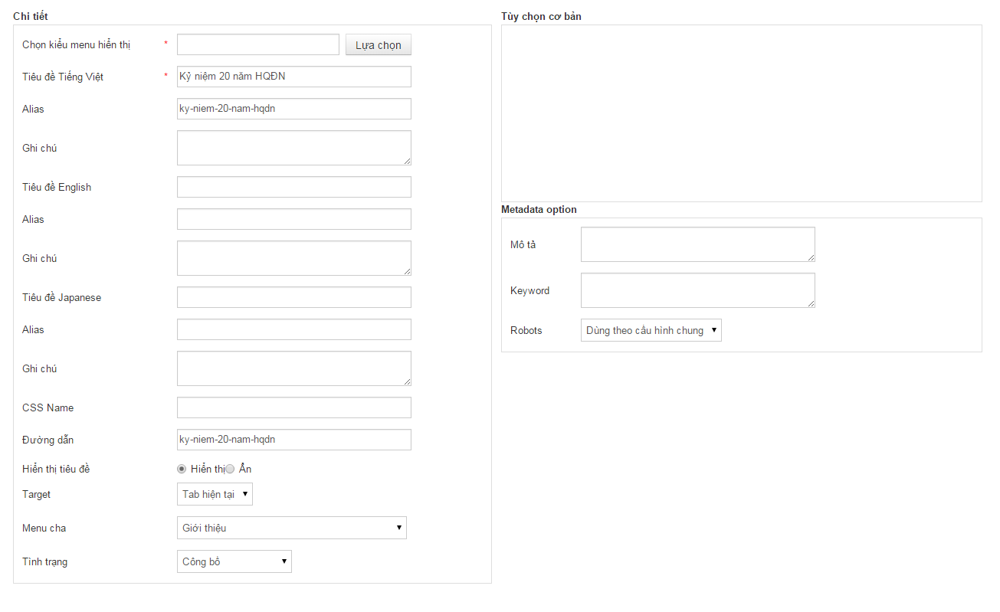

VII. Quản lý Menu
Menu là phần hiển thị những chức năng của trang web. Để quản lý thông tin menu ta thực hiện các công việc sau:
1. Thêm menu
Việc thêm menu vào trang web được thực hiện theo các bước sau
-
Vào C.Menus -> Chọn mục menu cần thêm menu
-
Trong cửa sổ Danh sách Menu Items chọn Thêm
-
Trong cửa sổ thêm mới chú ý các phần sau:
Chi tiết:

-
Chọn kiểu menu hiển thị: Loại menu hiển thị, xem chi tiết trong Các loại module/Kiểu Menu.

-
Tiêu đề: Nhập tiêu đề các ngôn ngữ cho menu
-
Alias: Phần Alias là phần tự động sinh ra nên không cần điền gì hết. Nếu lưu lại mà xuất hiện thông báo Alias đã tồn tại thì hãy gõ alias vào nội dung giống với tiêu đề bài viết và thêm 1 chữ nào đó vô, Alias gõ không cần dấu, vì gõ dấu thì chương trình cũng sẽ tự động bỏ dấu đi.
-
Đường dẫn: link menu ở trang web (tự động sinh ra không sửa được)
-
Hiển thị tiêu đề: Ẩn/Hiện tiêu đề của menu
-
Target: Cho phép khi click vào sẽ đi ra cửa sổ mới hoặc cửa sổ hiện tại
-
Menu cha: Chọn menu cha cho menu. Nếu không chọn thì menu ở cấp cao nhất.
-
Trạng thái: (
 Công bố: hiển thị menu,
Công bố: hiển thị menu,  Chưa được công bố: ẩn menu)
Chưa được công bố: ẩn menu)
Tùy chọn cơ bản:
Tùy thuộc vào mỗi loại module sẽ có các thiết lập khác nhau. Xem chi tiết trong mục Các loại module/ Kiểu menu.
Danh sách Module:
Cho phép thay đổi các module cho menu. Khi thêm mới các module thông dụng trong trang web ( ví dụ: main menu, footer…) sẽ mặc định sẽ check ( Trong Module khung chi tiết -> Có thuộc tính thông dụng)
2. Sửa nội dung menu
-
Chọn C.Menus -> chọn mục menu cần chỉnh sửa
-
Chọn menu cần sửa, bấm vào nút Sửa để mở màn hình sửa nội dung
-
Chỉnh sửa nội dung cần thiết, bấm Lưu để lưu nội dung vừa sửa tương tự như phần tạo menu.
3. Xóa menu
-
Chọn C.Menus -> chọn mục menu
-
Chọn menu cần xóa -> Nhấn nút Xóa
4. Sắp xếp thứ tự menu
-
Chọn C.Menus -> Chọn mục menu
-
Trong cột sắp xếp nhập thứ tự sắp xếp cho menu. Nhấn nút
 để hoàn tất.
để hoàn tất.
5. Ẩn/hiện menu
-
Chọn C.Menus -> Chọn mục menu
-
Trong cột Trạng thái click vào biểu tượng trạng thái để thay đổi trạng thái của menu( Công bố: hiển thị menu, Chưa được công bố: ẩn menu)
Hoặc có thể vào C.Menus -> Chọn mục menu -> vào sửa menu -> Thay đổi trạng thái của menu -> nhấn nút lưu lại.